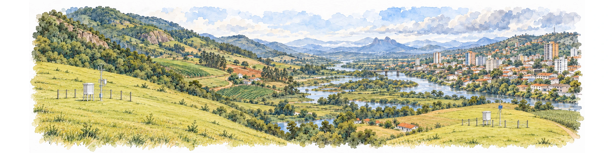

4 Integração de dados: espaço, tempo e qualidade
No capítulo anterior, a pergunta central foi o que um dado ou indicador representa. Neste capítulo, o problema muda de escala: quando duas ou mais fontes podem ser combinadas sem que o significado original seja perdido? Essa questão aparece continuamente na interface clima, ambiente e saúde, porque as fontes raramente são produzidas para o mesmo lugar, o mesmo período ou a mesma população.
Uma estação meteorológica registra condições em um ponto; uma célula de uma grade representa um valor associado a uma área; uma taxa municipal resume eventos e população segundo um território administrativo. Do mesmo modo, uma concentração horária, uma média diária, um total mensal e uma taxa anual pertencem a janelas temporais diferentes. Unir essas informações exige mais do que encontrar uma coluna de município e outra de data: exige verificar que espaço, que tempo e que população cada valor efetivamente representa.
Essa compatibilização modifica o dado. Transformar uma grade em uma média municipal, converter UTC (Tempo Universal Coordenado) para horário local, agregar horas em dias, escolher um período de referência ou tratar valores ausentes são decisões analíticas. Elas podem ser necessárias e perfeitamente defensáveis, mas precisam ser coerentes com a pergunta e permanecer documentadas.
A qualidade deve ser examinada pela mesma lógica. Um produto pode ser adequado para comparar grandes regiões e insuficiente para orientar uma ação em um bairro; uma base consolidada pode ser excelente para análise retrospectiva e chegar tarde demais para vigilância operacional. A norma 19157-1 da Organização Internacional de Normalização (ISO) organiza a qualidade de dados geográficos a partir dos requisitos do produto e do uso (International Organization for Standardization, 2023). Aqui, adotaremos uma formulação prática: não basta perguntar se o dado é bom; é preciso perguntar se ele é adequado para aquilo que se pretende fazer com ele.
O percurso começa pelo espaço e pelo tempo representados, passa pela avaliação da qualidade e da incerteza e chega aos limites da interpretação. Compatibilizar as bases permite construir uma comparação coerente; demonstrar causalidade ou estimar uma contribuição atribuível exige perguntas e hipóteses adicionais.
4.1 O espaço que um dado representa
Quando um conjunto de dados possui latitude e longitude, pode parecer que sua dimensão espacial está resolvida. Não está. Uma coordenada informa onde algo foi registrado ou referenciado, mas não necessariamente qual porção do espaço aquele valor representa.
Uma estação meteorológica, por exemplo, possui uma coordenada, mas sua observação é feita em um ponto e sob condições específicas de instalação. Uma célula de grade de 10 km possui uma localização e uma dimensão, mas o valor pode resultar de um modelo cuja influência espacial ultrapassa o tamanho nominal da célula. Uma taxa municipal, por sua vez, não representa um ponto: ela resume eventos e população dentro de um limite administrativo. Barcellos e Bastos mostram que escolher escala e objeto de análise antecede a integração das bases e condiciona a interpretação dos resultados ambientais e sanitários (Barcellos; Bastos, 1996).
O módulo 2 do ASISA-Queimadas relaciona a escolha das escalas e unidades de análise às diferentes esferas da vigilância (Gracie; Rodrigues, 2024, p. 79–80).
A Figura 4.1 resume essa distinção em vista vertical, como um mapa. Estação, residência, ruas e rio ocupam posições idênticas nos três painéis; mudam apenas as camadas que indicam localização, suporte e unidade de análise. Compartilhar uma região do mapa não torna esses suportes equivalentes. A paisagem é hipotética e não possui escala cartográfica.

Fontes conceituais: Barcellos e Bastos (1996); Carvalho e Souza-Santos (2005). Elaboração e revisão para esta obra, com aquarela gerada por IA (image_gen) e rótulos editáveis. Licença dos arquivos autorais: GPL-3.0; fontes mantêm suas condições de uso.
O processo observado também possui uma escala própria. Chuvas intensas podem variar muito em pequenas distâncias. Temperatura responde a relevo, urbanização, vegetação e materiais da superfície. Algumas condições da qualidade do ar podem variar perto de vias ou fontes de emissão, enquanto fenômenos ambientais de longa duração podem abranger regiões extensas. A escolha do dado deve considerar essa escala do fenômeno, e não apenas a resolução disponível (International Organization for Standardization, 2023).
4.1.1 Estações, grades e satélites respondem a perguntas diferentes
Estações meteorológicas e ambientais oferecem observações diretamente vinculadas a instrumentos, mas sua representatividade depende de localização, altitude, entorno, altura de medição, manutenção e variável observada. A estação mais próxima nem sempre é a que melhor representa o território de interesse. Uma estação em aeroporto, por exemplo, pode registrar condições bastante diferentes das encontradas em áreas densamente construídas da mesma cidade.
Uma rede de estações é também uma amostra espacial. Se os pontos se concentram em cidades, aeroportos ou áreas de fácil acesso, possuir muitas estações não significa que todos os ambientes estejam igualmente representados. Coordenadas, histórico de localização, instrumento, frequência de medição e códigos de qualidade fazem parte dos metadados necessários à interpretação (World Meteorological Organization, 2023).
Dados em grade oferecem cobertura contínua, mas podem resultar de processos muito diferentes. Uma grade pode ser produzida por interpolação entre pontos, por modelos, por combinação entre modelos e observações ou por sensores em satélites. Uma reanálise, por exemplo, combina observações disponíveis com um modelo e um sistema de assimilação para reconstruir condições passadas de forma coerente; ela não corresponde a medições feitas em cada célula (Hersbach et al., 2020). No sensoriamento remoto, sensores observam a energia proveniente da superfície ou da atmosfera e algoritmos transformam essas observações em produtos como temperatura da superfície ou cobertura vegetal; nuvens, ângulo de observação e mistura de materiais dentro do pixel podem influenciar o resultado (International Organization for Standardization, 2023; Jin, 2012). O Capítulo 5 retomará esses produtos do ponto de vista de suas fontes e documentação. Em estudos de saúde, a localização de registros também depende do endereço disponível, da qualidade da geocodificação e da unidade territorial de divulgação. Esses limites precisam acompanhar os métodos de análise espacial, como discutem Carvalho e Souza-Santos (Carvalho; Souza-Santos, 2005).
4.2 Do suporte original ao território de gestão
Grande parte da vigilância e da gestão do SUS (Sistema Único de Saúde) trabalha com municípios, regiões de saúde e estados. Os dados ambientais, porém, raramente são produzidos exatamente nesses limites. Transformar uma estação ou uma grade em um indicador territorial exige uma mudança de suporte espacial: o valor passa a representar outra unidade.
Essa mudança pode parecer simples — “calcular a média do município” —, mas regras diferentes respondem a perguntas diferentes. Considere uma grade de temperatura. A média pela área municipal descreve a condição térmica média do território. Uma média ponderada pela população dá maior peso aos locais onde vivem mais pessoas e aproxima a condição térmica média nos locais de residência. O máximo territorial procura identificar a maior temperatura estimada. Nenhuma dessas estatísticas é universalmente correta; a escolha depende da pergunta (Openshaw, 1984).
Para um município (m), uma média ponderada pela população pode ser expressa por:
\[ \bar{x}_{pop,m} = \frac{\sum_g x_g\,p_{gm}}{\sum_g p_{gm}}, \]
em que (x_g) é o valor ambiental da célula (g) e (p_{gm}) é a população localizada na parte da célula (g) que pertence ao município (m). Essa notação deixa explícito que células e limites municipais podem se cruzar e que a população utilizada precisa estar espacialmente associada ao território analisado.
A expressão exige população total positiva e valores ambientais válidos nas células incluídas. Excluir células por falta de dados altera a população representada e precisa ser documentado. O exemplo real a seguir permite comparar essa escolha com a ponderação por área usando o mesmo produto e o mesmo território.
A Figura 4.2 decompõe o cálculo. Primeiro, identifica-se o valor ambiental de cada célula; depois, localiza-se a população sobre a mesma base espacial. O limite territorial seleciona as interseções que participarão da síntese. A população fora desse limite não pertence ao denominador do município, mesmo quando está em uma célula que o atravessa.

Fontes conceituais: Barcellos e Bastos (1996); Carvalho e Souza-Santos (2005); fórmula e definições desta seção. Elaboração para esta obra em SVG, com aquarela gerada por IA (image_gen) reutilizada da vista vertical v3 e rótulos editáveis. Licença dos arquivos autorais: GPL-3.0; fontes mantêm suas condições de uso.
No painel final, cada valor ambiental é multiplicado pela população de sua interseção com o território; a soma desses produtos é dividida pela população incluída. O campo ambiental permanece igual: mudam os pesos atribuídos às suas partes. Uma média pela área usaria áreas como pesos, respondendo a outra pergunta. Os pontos da prancha apenas ilustram localizações e não equivalem a uma pessoa, a um domicílio ou a uma contagem observada. Como (p_{gm}) já se refere à população da interseção, não se deve multiplicá-la novamente pela fração de área sem justificativa metodológica.
Ponderar pela população não transforma uma temperatura ambiental em uma medida individual de exposição. Pessoas se deslocam, trabalham e permanecem em ambientes internos; a própria superfície populacional pode ser estimada. Ainda assim, quando a pergunta se refere à condição média nos locais de residência, essa ponderação pode ser mais informativa do que uma média puramente territorial.
4.2.1 Situação concreta: três temperaturas para o mesmo estado
A Figura 4.3 mostra um exemplo em que a mesma previsão de temperatura do ar do Copernicus Atmosphere Monitoring Service (CAMS) é resumida para o estado do Rio de Janeiro de três maneiras. A média pela área territorial é 19,9 °C; a média ponderada pela distribuição populacional é 21,3 °C; o máximo territorial é 23,9 °C. Não existe contradição entre os três valores. Eles respondem a perguntas diferentes.
A média pela área descreve a superfície territorial; a média populacional enfatiza onde as pessoas residem; o máximo localiza a condição mais elevada. A escolha entre eles deve vir antes do cálculo e deve ser registrada como parte da definição do indicador. Os valores pertencem à rodada inicializada em 28 de julho de 2026, às 00 UTC, com horizonte de 24 horas e validade em 29 de julho de 2026, às 00 UTC. São resumos de uma previsão, não observações de estações nem uma diferença universal entre os métodos (Copernicus Atmosphere Monitoring Service, 2026; Instituto Brasileiro de Geografia e Estatística, 2024, 2025).

Fontes: CAMS/ECMWF (temperatura a 2 m; 29 jul. 2026, 00 UTC) e IBGE (Grade Estatística 2022 e Malha 2022), via geobr. Elaboração própria; script e proveniência: data-raw/figures/README.md. Licenças: termos das fontes e da obra.
4.2.2 Sobreposição espacial, interpolação areal e ponderação populacional
Três operações próximas na aparência devem ser separadas conceitualmente.
Sobreposição entre grade e território ocorre quando uma superfície contínua, como temperatura, é resumida para um polígono. Células cortadas pelo limite podem contribuir segundo a fração de área efetivamente contida no território. A estatística final — média, máximo, percentil ou outra — deve ser coerente com a grandeza analisada.
Interpolação areal é necessária quando uma quantidade associada a polígonos de origem precisa ser transferida para polígonos de destino diferentes. Em variáveis extensivas, como contagens populacionais, uma ponderação apenas pela área pressupõe distribuição uniforme dentro de cada polígono. Métodos dasimétricos procuram melhorar essa redistribuição utilizando informação auxiliar, como áreas construídas ou cobertura da terra, mas acrescentam dados e hipóteses (International Organization for Standardization, 2023; Openshaw, 1984).
Ponderação populacional da exposição, por sua vez, combina uma superfície ambiental com uma superfície de população já compatibilizada espacialmente. Seu objetivo não é redistribuir a temperatura ou a concentração, mas atribuir maior peso aos locais onde reside mais gente.
A Figura 4.4 compara as três operações mantendo explícitos seus objetos de entrada e de saída. No primeiro painel, a interseção delimita a parte da grade associada ao território. No segundo, o mesmo domínio recebe duas malhas, e o objetivo é transferir quantidades extensivas entre elas. No terceiro, as superfícies já compatibilizadas são combinadas para calcular uma síntese ponderada.

Fontes conceituais: Openshaw (1984); ISO 19157-1 (2023); discussão desta seção. Elaboração para esta obra em SVG, com aquarela gerada por IA (image_gen) reutilizada da vista vertical v3 e rótulos editáveis. Licença dos arquivos autorais: GPL-3.0; fontes mantêm suas condições de uso.
Na interpolação areal por área, a parcela transferida depende da proporção da área de origem coberta por cada destino. Isso pressupõe distribuição uniforme da quantidade dentro do polígono de origem. Quando origem e destino cobrem integralmente o mesmo domínio, sem sobreposições duplicadas, a redistribuição deve conservar o total; se houver recortes ou lacunas, o balanço deve se referir apenas ao domínio comum. Informação auxiliar pode modificar os pesos, mas não elimina a necessidade de declarar as hipóteses. Já a ponderação populacional não redistribui a temperatura ou a concentração: utiliza a população como peso da síntese.
Essas operações preservam propriedades diferentes. O processamento deve declarar o que se pretende conservar — média, total, proporção, ocorrência ou distribuição —, como foram tratadas as interseções e que dados auxiliares foram utilizados.
4.3 Territórios administrativos também mudam
Municípios, regiões de saúde e outros territórios de gestão não são unidades naturais e imutáveis. Limites podem ser alterados, municípios podem ser criados e a composição de regiões pode mudar. Por isso, uma série territorial sem referência à malha e à vigência utilizadas pode se tornar ambígua (Instituto Brasileiro de Geografia e Estatística, 2024).
O município é extremamente útil para planejamento e vigilância porque organiza responsabilidades, população, serviços e políticas. Isso não significa que seja ambientalmente homogêneo. Um município extenso pode reunir áreas urbanas, rurais, florestais, serranas e costeiras. Um único valor municipal é uma síntese, não uma descrição de todos os locais que existem dentro dele.
O mesmo cuidado vale para regiões de saúde. Uma média regional pode ser apropriada para planejamento assistencial e, ao mesmo tempo, ocultar um município com condição muito mais crítica. Sempre que a heterogeneidade interna for relevante para a ação, uma síntese regional deve ser acompanhada de distribuição, mapa ou desagregação das unidades componentes.
4.3.1 Quando os resultados dependem de como desenhamos o mapa
Há ainda um problema menos intuitivo: resultados obtidos com dados agregados podem mudar quando o mesmo espaço é dividido de outra forma. Uma associação calculada entre municípios pode ser diferente da associação calculada entre bairros ou regiões. Mesmo unidades de tamanho semelhante podem produzir resultados distintos quando seus limites são redesenhados. Esse fenômeno é conhecido como problema da unidade de área modificável (modifiable areal unit problem, MAUP) (Openshaw, 1984).
Isso não é resolvido simplesmente escolhendo a menor unidade disponível. Áreas muito pequenas podem produzir taxas instáveis, aumentar problemas de confidencialidade e se alinhar mal ao processo ambiental. Quando a conclusão depende fortemente da escala ou do zoneamento, é recomendável testar unidades plausíveis e relatar o que permanece estável (Carvalho; Souza-Santos, 2005).
A Figura 4.5 mantém a mesma paisagem e altera somente as divisões. Do primeiro para o segundo painel, a agregação produz unidades maiores: muda a escala. Do primeiro para o terceiro, permanece o número de unidades, mas os limites mudam: muda o zoneamento. A figura explica as operações, sem estimar quanto uma associação se alteraria.

Fontes conceituais: Openshaw (1984); Barcellos e Bastos (1996); Carvalho e Souza-Santos (2005). Elaboração e revisão para esta obra, com aquarela gerada por IA (image_gen) e rótulos editáveis. Licença dos arquivos autorais: GPL-3.0; fontes mantêm suas condições de uso.
4.4 O tempo que um dado representa
Assim como todo valor possui um suporte espacial, ele também possui uma referência temporal. Em clima e saúde, o tempo do fenômeno, da medição, do registro e da disponibilidade da informação frequentemente não coincide.
Uma chuva intensa pode ocorrer hoje; uma inundação, algumas horas depois; sintomas, dias depois; um atendimento pode ser registrado no mesmo dia ou posteriormente; a base consolidada pode ser publicada semanas ou meses depois. Alinhar essas datas apenas porque aparecem na mesma coluna de “data” pode deslocar a relação que se pretende estudar. A Figura 4.6 distingue os momentos do fenômeno, da exposição, do possível efeito, do cuidado e do processamento da informação.

Fontes conceituais: Bastos et al. (2019); discussão de temporalidade deste capítulo. Elaboração e revisão para esta obra, com aquarela gerada por IA (image_gen) e rótulos editáveis. Licença dos arquivos autorais: GPL-3.0; fontes mantêm suas condições de uso. Revisão urbana da aquarela: image_gen, com o original e a referência visual da série.
Na figura, as conexões tracejadas representam caminhos possíveis: exposição não implica adoecimento inevitável. O intervalo até um efeito sanitário pertence ao processo estudado; a espera por atendimento e a demora de registro ou publicação pertencem a outros processos. As vinhetas não representam a trajetória documentada de uma pessoa, e seu espaçamento não quantifica duração. Bastos e colaboradores mostram por que atrasos de notificação precisam ser considerados na leitura de dados recentes de vigilância (Bastos et al., 2019).
Dependendo da fonte, podem coexistir várias datas: ocorrência do fenômeno, início e fim da exposição, início dos sintomas, atendimento, internação, notificação, competência, processamento e publicação. Em produtos de previsão há ainda a data da rodada e o horário para o qual a previsão é válida. A data correta para uma análise depende da pergunta.
Em previsões, três referências devem ser preservadas: inicialização, horizonte de previsão (lead time) e tempo de validade. A inicialização informa quando a rodada começou; o horizonte informa quantas horas ou dias à frente o modelo avançou; e o tempo de validade é o instante ou período ao qual o valor se refere. A Figura 4.7 usa os metadados do exemplo CAMS: a rodada de 28 de julho de 2026, às 00 UTC, com horizonte de +24 h produz uma estimativa válida em 29 de julho de 2026, às 00 UTC. O horário de validade não informa quando o arquivo foi baixado, e a previsão não se torna observação por ter alcançado esse horário.1

Fontes conceituais: CAMS/ECMWF; datas do metadado do exemplo do Rio de Janeiro. Elaboração e revisão para esta obra, com aquarela gerada por IA (image_gen) e rótulos editáveis. Licença dos arquivos autorais: GPL-3.0; fontes mantêm suas condições de uso. Revisão urbana da aquarela: image_gen, com o original e a referência visual da série.
4.4.1 Dia, semana e mês precisam ser definidos
“Diário” não é uma propriedade suficiente. Um dia precisa de início, fim e fuso horário. Dados meteorológicos frequentemente usam UTC; sistemas de saúde podem usar horário local. Sem harmonização, eventos próximos à meia-noite podem ser associados ao dia errado. Calendários diferentes também podem aparecer em modelos climáticos.
Uma prática segura é conservar o horário original e seu fuso, realizar conversões explicitamente e somente depois criar janelas diárias, semanais ou mensais para a análise. Quando um deslocamento de algumas horas pode alterar a associação, a sensibilidade à definição temporal deve ser verificada.
O box segue as definições e regras documentadas pelo Bureau Internacional de Pesos e Medidas (BIPM), pelo Observatório Nacional, pela Internet Assigned Numbers Authority (IANA) e pelo Observatório de Paris (Bureau International des Poids et Mesures, [S.d.]; Internet Assigned Numbers Authority, [S.d.]; Observatoire de Paris, SYRTE, 2023; Observatório Nacional, 2026). Os identificadores e cálculos estão preservados em data-raw/figures/conversoes-utc-cap4.json. A conversão de julho usa o mesmo instante de validade da previsão CAMS apresentada no capítulo.
4.4.2 Agregar também muda o fenômeno
Médias, somas, máximos e contagens não são operações neutras. Precipitação mensal costuma representar um acumulado; temperatura mensal, uma média; um máximo mensal de temperatura corresponde ao maior extremo diário; uma contagem anual de dias quentes preserva frequência, mas perde a ordem em que ocorreram.
| Transformação | Pergunta respondida | Exemplo | O que pode se perder |
|---|---|---|---|
| Média | qual foi o nível típico? | temperatura média diária | picos e heterogeneidade dentro do dia |
| Soma | quanto se acumulou? | chuva acumulada no mês | distribuição dos eventos dentro do mês |
| Máximo | qual foi o maior valor? | maior temperatura do mês | duração e frequência de condições elevadas |
| Contagem | quantos dias atenderam ao critério? | número de dias acima de um valor definido | ordem e agrupamento dos dias |
| Sequência | por quanto tempo a condição persistiu? | maior sequência de dias que atendem a um critério | intensidade dentro do episódio, se não incorporada |
A Figura 4.8 representa as operações do Quadro 4.1. Os símbolos remetem a observações ou intervalos, sem apresentar uma série medida. A média ilustrada usa pesos iguais e requer observações comparáveis; se os intervalos representados forem diferentes, a ponderação temporal também precisa ser considerada.

Fontes conceituais: Organização Meteorológica Mundial (2023); quadro de transformações temporais desta seção. Elaboração para esta obra em SVG, com rótulos e relações editáveis; sem geração de aquarela. Licença dos arquivos autorais: GPL-3.0; fontes mantêm suas condições de uso.
A soma reúne quantidades acumuladas em intervalos sem sobreposição, como precipitação em milímetros. Uma intensidade em milímetros por hora precisa ser integrada pela duração antes de produzir esse total. O máximo seleciona um extremo, sem informar por quanto tempo ele persistiu. Nos dois últimos painéis, o mesmo calendário esquemático permite distinguir contagem e sequência: a primeira reúne todos os dias que atendem ao critério; a segunda procura o maior bloco consecutivo. O critério e o tratamento de dias ausentes devem ser definidos antes de ambas as operações; ausência não equivale a um dia que não atende ao critério.
O Quadro 4.1 mostra que cada operação preserva uma propriedade e pode ocultar outras. Agregar com coerência depende da unidade: uma intensidade de chuva, por exemplo, precisa ser integrada no tempo para produzir um acumulado.
A completude também faz parte da agregação. Uma média diária calculada a partir de 24 observações e outra calculada com apenas três horários podem não ser comparáveis. Para totais, horas ou dias ausentes podem produzir subestimação. Critérios mínimos de completude devem ser definidos antes do cálculo (World Meteorological Organization, 2023).
É igualmente importante reconhecer a natureza temporal da variável. Número de pessoas internadas em determinado instante representa um estoque; novas internações durante uma semana representam um fluxo; uma interrupção de energia é um evento, com início e duração. Somar estoques sucessivos pode contar a mesma pessoa várias vezes. Resumir um evento apenas pela data inicial pode esconder sua persistência.
4.4.3 Defasagens devem ter significado
Uma condição ambiental e um efeito sobre a saúde nem sempre aparecem no mesmo momento. Alguns efeitos podem ocorrer no mesmo dia; outros surgem depois de horas, dias ou períodos ainda mais longos. A distância temporal plausível depende do processo que está sendo estudado.
O guia de saúde ambiental também alerta que a latência e as diferenças entre local de residência e de exposição podem dificultar a associação entre indicadores ambientais e de efeitos (Brasil. Ministério da Saúde, 2011, p. 120).
Essa distância temporal costuma ser chamada de defasagem. Sua escolha deve partir do mecanismo e da pergunta, não da busca pela associação estatisticamente mais forte. Para explicar um desfecho no dia analisado, as exposições candidatas pertencem ao mesmo dia e aos dias anteriores, conforme o mecanismo. Se a análise parte do dia da exposição, são os desfechos posteriores que precisam ser acompanhados. Trocar essas referências pode introduzir informação futura indevida. Quando houver mais de uma janela plausível, elas podem ser comparadas em análises de sensibilidade. Os métodos epidemiológicos para estimar relações defasadas serão retomados no Capítulo 14.
A Figura 4.9 apresenta duas formas de organizar a mesma pergunta temporal. Partindo do dia do desfecho, examinam-se exposições do mesmo dia e de dias anteriores. Partindo do dia da exposição, acompanham-se possíveis desfechos naquele dia e depois. A escolha da âncora muda a organização da base, mas não autoriza usar uma exposição futura para explicar um evento anterior.

Fontes conceituais: Hernán e Robins (2020); Gasparrini, Armstrong e Kenward (2010). Elaboração para esta obra em SVG, com rótulos e relações editáveis; sem geração de aquarela. Licença dos arquivos autorais: GPL-3.0; fontes mantêm suas condições de uso.
Na figura, (t) identifica o dia de referência e (k) delimita uma janela de dias; os marcadores intermediários são ilustrativos. Defasagem zero significa exposição e desfecho no mesmo intervalo agregado, sem garantir que sua ordem dentro do dia seja conhecida. Defasagem positiva considera a exposição anterior ao desfecho. Não há uma janela universal aplicável a todos os fenômenos, e a ordenação temporal não demonstra, isoladamente, causalidade.
A defasagem medida também depende da data escolhida para o desfecho. Resposta biológica, procura e acesso ao cuidado, admissão, registro e publicação são processos distintos. Se a análise usa a data de internação, a distância desde a exposição pode incluir tanto resposta biológica quanto espera assistencial; a data de registro ainda acrescenta atraso informacional. A Figura 4.6 distingue esses momentos; a análise precisa explicitar qual deles a janela pretende representar. A discussão de causalidade aparece em Seção 4.8, e os métodos de estimação serão aprofundados no Capítulo 14.
4.5 Períodos de referência e comparações no tempo
Um valor pode adquirir significados diferentes conforme a referência utilizada. A OMM (Organização Meteorológica Mundial) define normais climatológicas em períodos de 30 anos e recomenda janelas padronizadas, como 1991–2020, para caracterizar o clima recente (World Meteorological Organization, 2017). Entretanto, análises de mudança climática ou índices de extremos podem precisar de uma base fixa, justamente para que o referencial não se mova junto com o clima.
Não há contradição entre essas escolhas. O período depende da finalidade:
- Uma normal atualizada descreve melhor condições climatológicas recentes;
- Uma referência fixa permite acompanhar mudança em relação ao mesmo ponto de comparação;
- Índices padronizados devem seguir a especificação usada em sua definição;
- Critérios operacionais de alerta precisam ser definidos para a finalidade e o território em que serão usados.
Trocar o período de referência pode alterar substancialmente um indicador. Uma série calculada com 1961–1990 e outra com 1991–2020 podem ser válidas para finalidades distintas, mas não devem ser unidas como se a definição tivesse permanecido inalterada.
Percentis exigem cuidado semelhante. O percentil 90 da temperatura máxima não representa 90% de risco. Ele indica que, segundo a amostra e o método de referência, aproximadamente 90% dos valores ficaram abaixo daquele limiar. Percentis podem ser calculados para todo o período, por estação, para dias específicos do calendário ou em janelas móveis. Essas escolhas fazem parte do indicador (Climdex, [S.d.]; World Meteorological Organization, 2017).
Anomalias também dependem explicitamente da referência:
\[ A_t = x_t - \bar{x}_{ref}. \]
Uma anomalia positiva de temperatura indica valor acima da média de referência; não significa automaticamente evento extremo nem dano à saúde. Clima e muitos agravos possuem sazonalidade, razão pela qual comparações devem distinguir variação sazonal, tendência e mudança real da série.
4.6 Qualidade: adequado para qual uso?
Depois de compreender onde e quando um valor existe, a pergunta seguinte é se ele possui qualidade suficiente para a finalidade pretendida. Qualidade é multidimensional. Uma base pode ser muito completa e pouco representativa; precisa e enviesada; atual e ainda sujeita a revisão; coerente internamente e incompatível com outra fonte.
Para dados de saúde, a OMS (Organização Mundial da Saúde) destaca dimensões como completude, oportunidade, consistência interna e coerência com outras fontes (World Health Organization, 2023). Dados geográficos acrescentam aspectos de completude, consistência lógica, qualidade posicional, temporal e temática (International Organization for Standardization, 2023). Na produção brasileira, Lima, Schramm, Coeli e Silva discutem dimensões e métodos de avaliação dos sistemas de informação em saúde, reforçando a necessidade de examinar a qualidade de maneira explícita (Lima et al., 2009). A síntese do Quadro 4.2 combina esse debate com os requisitos ambientais e geográficos; não reproduz uma classificação única nem calcula uma nota geral.
| Dimensão | Pergunta prática |
|---|---|
| Exatidão e validade | o valor está próximo do fenômeno que se pretende representar? |
| Completude | os registros esperados estão presentes e válidos? |
| Representatividade | os locais, períodos e grupos observados representam o universo de interesse? |
| Oportunidade | o dado chega a tempo da decisão? |
| Consistência | unidades, códigos, intervalos e relações internas são coerentes? |
| Homogeneidade | a série mudou pelo fenômeno ou por mudanças de instrumento, método ou cobertura? |
| Comparabilidade | definições, territórios, períodos, denominadores e versões permitem contraste? |
| Rastreabilidade | é possível saber de onde veio o valor e quais transformações recebeu? |
A Figura 4.10 organiza essas dimensões em torno da finalidade. A disposição dá o mesmo peso visual aos componentes: uma base oportuna pode ser incompleta, e outra muito completa pode chegar depois da decisão. É a consequência do uso que orienta quais limitações precisam ser corrigidas ou explicitadas.

Fontes conceituais: Lima et al. (2009); OMS (2023); ISO 19157-1 (2023). Elaboração e revisão para esta obra, com aquarela gerada por IA (image_gen) e rótulos editáveis. Licença dos arquivos autorais: GPL-3.0; fontes mantêm suas condições de uso. Revisão urbana da aquarela: image_gen, com o original e a referência visual da série.
4.6.1 Exatidão, precisão e representatividade não são a mesma coisa
Exatidão diz respeito à proximidade de um valor em relação à referência apropriada. Precisão se relaciona à repetibilidade ou dispersão. Um sensor pode produzir medidas muito semelhantes entre si e, ainda assim, apresentar viés sistemático. Um modelo pode reproduzir bem padrões regionais e ter dificuldade com extremos locais.
Representatividade acrescenta outra questão: mesmo uma medição exata no ponto pode não descrever adequadamente o território. Esse problema é particularmente importante quando uma estação, um estabelecimento ou uma amostra é utilizada como referência para uma população muito maior.
Cobertura não é sinônimo de representatividade. Uma rede pode possuir milhares de registros e ainda concentrar observações em capitais, áreas de fácil acesso ou serviços com melhor capacidade de informação. Da mesma forma, um sistema de saúde pode ter alta completude entre unidades notificantes e, ainda assim, deixar de captar populações que acessam pouco os serviços. Avaliar representatividade exige perguntar quem, onde e em que condições pode aparecer na base — e quem tende a permanecer invisível.
4.6.2 Completude: o que está faltando e por quê?
Uma forma simples de expressar completude é:
\[ C = 100 \times \frac{n_{válidos}}{n_{esperados}}. \]
O denominador precisa refletir o calendário real de operação. Se nenhum registro era esperado, a razão fica indefinida; isso não corresponde a completude de 100%. Uma estação instalada em junho não deveria ser tratada como se tivesse obrigação de registrar dados em janeiro. Da mesma forma, completude global elevada pode esconder períodos críticos. Uma série com alta completude no ano pode perder justamente os dias de maior chuva ou calor. O percentual deve ser acompanhado da distribuição das falhas no tempo e no espaço, e não funcionar como garantia isolada de qualidade.
O mecanismo da ausência também importa. Falhas completamente ocasionais tendem a afetar principalmente a precisão. Falhas associadas a tempestades, falta de energia, sobrecarga de serviços ou dificuldade de acesso podem retirar dados exatamente quando o fenômeno é mais intenso, produzindo viés.
A Figura 4.11 separa cinco estados que podem parecer semelhantes em uma planilha. O pluviômetro simboliza uma observação válida igual a zero; o sensor desconectado, a falta de um registro utilizável; o laboratório, uma limitação de detecção. O formulário e a pasta protegida lembram que não aplicabilidade e supressão têm motivos distintos. A transparência do frasco não indica ausência de substância, e nenhum instrumento da ilustração apresenta uma medição real.

Fontes conceituais: discussão de completude e proteção deste capítulo; Lima et al. (2009); LGPD. Elaboração e revisão para esta obra, com aquarela gerada por IA (image_gen) e rótulos editáveis. Licença dos arquivos autorais: GPL-3.0; fontes mantêm suas condições de uso. Revisão urbana da aquarela: image_gen, com o original e a referência visual da série.
O tratamento deve seguir o dicionário da fonte e o método analítico. Imputação requer justificativa e avaliação de sensibilidade; ausência de registro não autoriza preencher automaticamente o valor com zero. Valores suprimidos precisam conservar sua condição de proteção.
4.6.3 Extremos merecem investigação, não exclusão automática
Verificações de consistência procuram valores fisicamente impossíveis, códigos inválidos, duplicidades e relações incoerentes — como temperatura mínima maior que a máxima. Essas regras devem sinalizar registros para investigação. Em clima e saúde ambiental, valores extremos verdadeiros são frequentemente os registros de maior interesse. Excluir automaticamente tudo o que parece “fora do normal” pode apagar o próprio evento que se deseja estudar.
A comparação com outra fonte pode ajudar, mas concordância não garante verdade quando as duas bases compartilham o mesmo modelo, instrumento ou procedimento. Por isso, validação interna, comparação externa e conhecimento substantivo são complementares.
4.6.4 Homogeneidade e quebras de série
Uma série homogênea varia principalmente por mudanças do fenômeno, e não por alterações no processo de observação. Relocação de uma estação, troca de sensor, mudança de formulário, expansão da cobertura assistencial ou alteração de algoritmo podem produzir quebras que se parecem com tendências reais.
Metadados são essenciais para distinguir essas situações. Quando ajustes de homogeneização forem realizados, o dado original deve ser preservado e a versão ajustada precisa ser identificada, com método e data de processamento (World Meteorological Organization, 2023).
4.6.5 Comparabilidade não é apenas ter o mesmo nome
Dois indicadores chamados “temperatura média municipal”, “população exposta” ou “taxa de internação” podem não ser diretamente comparáveis. Antes de colocá-los na mesma série ou tabela, é necessário verificar definição, unidade, suporte, período, população, malha territorial, critérios de completude, versão e método de cálculo.
Mudanças metodológicas podem melhorar a qualidade e, ao mesmo tempo, romper a comparabilidade histórica. Quando isso ocorre, é preferível recalcular o passado, quando possível, ou marcar a quebra claramente em vez de produzir uma continuidade apenas visual.
4.7 Incerteza: o que permanece desconhecido
Qualidade e incerteza estão relacionadas, mas não são sinônimos. Mesmo após procedimentos adequados de coleta e controle, permanecem limites de conhecimento. Eles podem decorrer de medição, cobertura, modelo, parâmetros, imputação, agregação espacial, período de referência ou cenários futuros (International Organization for Standardization, 2023; World Health Organization, 2023).
Também é importante separar incerteza de variabilidade real. Diferenças entre bairros, estações do ano ou grupos populacionais podem ser parte do fenômeno que se deseja compreender. Suavizar essas diferenças apenas para produzir um mapa mais regular pode eliminar informação relevante.
A incerteza na estimação de uma média ou de outro parâmetro pode diminuir com observações adicionais adequadas; a variabilidade real do fenômeno não desaparece por esse motivo. Outra parte decorre de limitações de conhecimento ou do próprio modelo: um sensor enviesado, uma população não observada ou uma definição inadequada não são corrigidos simplesmente aumentando o número de registros.
O Quadro 4.3 relaciona etapas de produção, limitações possíveis e formas de examiná-las. A avaliação deve acompanhar a cadeia inteira, porque uma escolha espacial pode modificar a exposição usada no modelo e, depois, a interpretação do efeito.
| Etapa | Exemplo | Como examinar |
|---|---|---|
| Observação | calibração, falha, representatividade | metadados, códigos de qualidade e comparação |
| Modelo | hipóteses, parâmetros e viés | validação, comparação com observações e comparação entre modelos |
| Integração espacial | ponderador, borda e mudança de suporte | métodos alternativos e análise de sensibilidade |
| Indicador | limiar, período-base e completude | recalcular com especificações plausíveis |
| Saúde | sub-registro, classificação e denominador | estudos de cobertura, revisão e comparação |
| Decisão | relação entre valor e ação | avaliação no uso real e monitoramento de consequências |
Intervalos de confiança, quando utilizados, expressam determinados componentes da incerteza sob um modelo estatístico; eles não representam toda a incerteza existente. Por isso, não incorporam automaticamente viés de seleção, erro na representação da exposição, mudança de definição ou incerteza do cenário. Da mesma forma, muitas casas decimais, limites cartográficos nítidos e paletas contínuas podem transmitir uma precisão maior do que a sustentada pelos dados.
4.7.1 Análise de sensibilidade: a conclusão depende da escolha?
Uma das formas mais úteis de avaliar incerteza metodológica é repetir o cálculo sob alternativas plausíveis. Pode-se comparar média por área e por população, diferentes critérios de completude, períodos de referência ou limiares. Se uma prioridade territorial muda completamente após uma pequena alteração razoável do método, a decisão é instável e essa informação deve acompanhar o resultado.
Em aplicações mais avançadas existem métodos estatísticos e conjuntos de modelos capazes de quantificar componentes adicionais da incerteza. Para a leitura introdutória deste capítulo, porém, a ideia principal é mais simples: repetir a análise com escolhas plausíveis ajuda a revelar quais decisões metodológicas governam a conclusão.
4.8 O que os dados permitem concluir: correlação, causalidade e atribuição
Depois de compatibilizar espaço, tempo e população, ainda é necessário decidir que pergunta a comparação pode responder. Descrever uma associação, estimar um efeito causal e atribuir uma parcela de um resultado a determinada exposição são tarefas relacionadas, com requisitos próprios. Um arquivo bem organizado ou um modelo complexo não produz, por si, uma interpretação causal.
4.8.1 Correlação é uma medida de associação
Associação é uma relação estatística entre variáveis: a distribuição de uma pode variar conforme a outra. Correlação é uma forma particular de resumir essa relação. O coeficiente de Pearson descreve direção e intensidade de uma relação linear; medidas baseadas em postos, como a de Spearman, descrevem relações monotônicas. Nenhum coeficiente resume todas as formas de dependência. Uma relação em curva pode produzir correlação linear próxima de zero, e uma correlação elevada pode resultar de causas comuns ou de como as observações foram selecionadas (Hernán; Robins, 2020).
Em clima e saúde, séries podem acompanhar a mesma estação do ano ou tendência de longo prazo. Áreas vizinhas podem compartilhar contexto social, infraestrutura e exposição ambiental. A agregação em municípios, a alteração de limites e a composição etária também podem modificar a associação. Por isso, uma correlação entre médias municipais não descreve automaticamente a relação entre exposições e desfechos individuais (Barcellos; Bastos, 1996; Carvalho; Souza-Santos, 2005).
A significância estatística não resolve esses problemas. Ela não mede a probabilidade de uma hipótese causal ser verdadeira, a importância sanitária do resultado ou a ausência de viés. Tampouco um resultado não significativo comprova inexistência de efeito: pouca informação, erro de mensuração ou especificação inadequada podem dificultar sua detecção. A interpretação precisa considerar magnitude, incerteza, desenho e plausibilidade do processo.
4.8.2 Causalidade exige um contraste definido
Uma pergunta causal explicita o que mudaria no desfecho se uma exposição ou intervenção fosse diferente, para uma população e um período definidos. A comparação é contrafactual: contrapõe resultados sob condições alternativas, embora a mesma unidade não possa ser observada simultaneamente em todas elas. No caso do calor, é necessário definir qual exposição se pretende contrastar, sua janela temporal e o desfecho acompanhado (Hernán; Robins, 2020).
A exposição precisa anteceder o efeito que se deseja explicar, mas a ordem temporal, isoladamente, não demonstra causalidade. Estudos observacionais podem sustentar inferências causais quando o desenho e as hipóteses são defensáveis. Entre os requisitos estão a comparabilidade dos grupos ou períodos quanto às causas comuns relevantes, a definição suficientemente clara das exposições comparadas e a existência de informação sobre essas condições na população estudada. Seleção dos participantes, perdas de dados e erros de mensuração também precisam ser examinados.
Cesar Victora, Sharon Huttly, Sandra Fuchs e Maria Teresa Olinto defendem que a análise epidemiológica seja orientada por modelos conceituais, capazes de situar determinantes em suas relações sociais e biológicas, em vez de selecionar variáveis apenas por associações estatísticas (Victora et al., 1997). Esse cuidado ajuda a distinguir papéis diferentes das variáveis.
Um confundidor é uma variável cujo controle ajuda a bloquear caminhos de associação não causal, como aqueles decorrentes de causas comuns da exposição e do desfecho. Um mediador está no caminho pelo qual a exposição pode produzir o efeito. Um fator de seleção determina quem aparece na amostra ou no sistema. Condicionar a análise a uma consequência comum da exposição e do desfecho — um colisor — pode criar uma associação que não existia na população. Ajustar um mediador pode retirar parte do efeito total que se desejava estimar; ajustar um colisor pode introduzir viés. Assim, acrescentar todas as variáveis disponíveis a uma regressão não garante melhor controle (Hernán; Robins, 2020).
4.8.3 Atribuir efeitos à exposição requer um contrafactual
Contar internações durante um período quente informa eventos registrados naquele intervalo. Estimar excesso compara o observado com um número esperado segundo uma referência temporal. Estimar carga atribuível à temperatura pergunta quanto do desfecho mudaria sob uma exposição térmica de referência, utilizando uma relação exposição–resposta e hipóteses causais explícitas. As três operações não produzem números intercambiáveis (Gasparrini; Leone, 2014; Hernán; Robins, 2020).
Excesso pode reunir efeitos de calor, fumaça, epidemias, interrupções assistenciais e outros processos. Sua ocorrência não identifica automaticamente a contribuição de cada fator. Para estimar número ou fração atribuível, é preciso justificar o contrafactual, a relação de risco, as defasagens e sua aplicação à população estudada. Alterar a referência pode alterar a estimativa, mesmo sem mudar os registros observados.
Uma estimativa populacional atribuível não identifica quais pessoas adoeceram exclusivamente por causa da exposição. Também não corresponde necessariamente ao resultado imediatamente alcançável por uma política: a intervenção pode modificar apenas parte da exposição, ter cobertura limitada ou exigir tempo. A carga evitável por uma ação concreta precisa de um cenário de intervenção compatível com essa ação.
4.8.4 Atribuição climática e atribuição sanitária respondem a perguntas diferentes
Na atribuição climática de eventos, investiga-se em que medida a influência humana alterou a probabilidade ou a intensidade de um evento definido no espaço e no tempo. Uma abordagem compara o clima com influência humana e um clima contrafactual sem essa influência; outras condicionam aspectos da circulação ou do evento. A definição e as condições da comparação fazem parte do resultado. O capítulo do Painel Intergovernamental sobre Mudança do Clima (IPCC) dedicado aos extremos, assinado por Seneviratne e colaboradores e com participação de Claudine Dereczynski, sistematiza essas abordagens (Seneviratne et al., 2021).
Atribuir mortalidade ao calor exige outra relação: a resposta sanitária à exposição térmica. Para estimar a parcela da mortalidade relacionada ao calor atribuível à mudança climática antropogênica, é necessário conectar alterações na exposição à resposta sanitária sob cenários coerentes. Vicedo-Cabrera e colaboradores, com participação brasileira de Maria de Sousa Zanotti Stagliorio Coelho e Paulo Saldiva, combinam essas etapas em um estudo de mortalidade relacionada ao calor (Vicedo-Cabrera et al., 2021).
A fração de risco de um evento climático atribuível à influência humana não é, por isso, a fração dos óbitos atribuível à mudança climática. Não se pode multiplicar automaticamente uma pela contagem de mortes: intensidade, duração, relação exposição–resposta, população e vulnerabilidade interferem na estimativa sanitária.
4.8.5 A pergunta orienta a linguagem do resultado
O Quadro 4.4 reúne os contrastes necessários. As linhas representam perguntas distintas, sem uma passagem automática da primeira para as demais. Métodos de estimação dos efeitos sanitários serão desenvolvidos no Capítulo 14.
| Pergunta | Comparação necessária | Limite de interpretação |
|---|---|---|
| Associação ou correlação | Variação conjunta das variáveis | Não demonstra efeito causal nem o quantifica automaticamente |
| Efeito causal | Resultado sob exposições ou intervenções alternativas | Depende do desenho, dos ajustes e das hipóteses de identificação |
| Carga atribuível à exposição | Carga sob a exposição estudada e sob uma referência | Não identifica pessoas afetadas nem a carga imediatamente evitável |
| Atribuição climática do evento | Probabilidade ou intensidade sob climas contrastados | Não fornece diretamente uma fração atribuível de efeitos sanitários |
| Carga sanitária atribuível à mudança climática | Exposição e resposta sanitária em cenários climáticos coerentes | Exige conectar as duas etapas e comunicar suas incertezas |
4.9 Proveniência, revisões e versionamento
Dados públicos e científicos não são objetos estáticos. Registros tardios entram em sistemas de saúde; duplicidades são removidas; modelos são atualizados; estimativas populacionais são revistas; arquivos podem ser republicados. Reprodutibilidade exige identificar qual versão foi efetivamente utilizada.
Dados preliminares não são necessariamente ruins. Em vigilância, podem ser os únicos disponíveis em tempo oportuno. Dados consolidados podem ser mais completos, mas chegar tarde. Uma queda nos registros mais recentes pode refletir notificações ainda não recebidas, e não queda real da ocorrência; correções desse atraso dependem de modelagem e avaliação próprias (Bastos et al., 2019). O problema ocorre quando versões com diferentes graus de maturidade são misturadas sem registro ou quando uma atualização altera retrospectivamente uma série e essa mudança não é identificada.
Uma trilha mínima de proveniência deve permitir reconstruir o caminho do dado: instituição e produto de origem, versão, data de acesso, período extraído e transformações realizadas. A documentação detalhada de fontes, arquivos, identificadores, formas de acesso e princípios de reutilização será tratada no Capítulo 5. Aqui, o ponto é garantir que uma mudança de versão ou processamento não seja confundida com uma mudança real do fenômeno.
4.10 Dados de saúde, granularidade e proteção
Maior detalhe nem sempre é melhor para divulgação. Pela Lei Geral de Proteção de Dados Pessoais (LGPD), informação de saúde vinculada a pessoa natural integra a categoria de dados pessoais sensíveis. Localização precisa, datas e eventos raros podem permitir identificação mesmo sem nomes. Uma estatística agregada não se torna automaticamente dado pessoal, mas sua possibilidade de associação a pessoas precisa ser examinada (Brasil, 2018).
O detalhe necessário à análise deve ser separado daquele adequado à divulgação. Supressão de células pequenas, agregação, arredondamento e controle de acesso podem reduzir riscos e alterar a interpretação. A Agência Nacional de Proteção de Dados (ANPD), denominada Autoridade Nacional de Proteção de Dados quando publicou seu guia de 2023, orienta o tratamento para fins acadêmicos e de pesquisa conforme finalidade, hipótese legal e salvaguardas (Autoridade Nacional de Proteção de Dados, 2023; Brasil, 2018).
Anonimização considera os meios razoáveis e disponíveis para impedir a associação a uma pessoa; retirar nomes, isoladamente, não a garante. Na pseudonimização, a associação depende de informação adicional mantida separadamente e com segurança. Ela não equivale à anonimização. O acesso para pesquisa também não implica autorização irrestrita de divulgação (Autoridade Nacional de Proteção de Dados, 2023; Brasil, 2018).
Proteção não deve ser tratada como uma correção aplicada somente no momento de publicar a tabela. Ela influencia o desenho da base, as chaves de ligação, o nível de agregação, os ambientes de acesso e as saídas permitidas. Valores deliberadamente suprimidos para proteção não devem ser reconstruídos por diferença entre totais.
4.11 Situação concreta: antes de cruzar calor e internações
Como situação didática, sem resultados empíricos apresentados, considere uma equipe que deseja estudar se o número de internações varia durante períodos de maior temperatura. A temperatura está disponível diariamente em grade; os registros de internação possuem município de residência e data de admissão; e as taxas usarão uma estimativa populacional anual. Antes de qualquer modelo, a equipe precisa decidir como representar espaço, tempo e população em cada lado da comparação.
O Quadro 4.5 apresenta escolhas que levam a interpretações diferentes, mesmo usando as mesmas bases. A taxa por grupo etário exige restringir numerador e denominador ao mesmo grupo; o município do estabelecimento descreve demanda assistencial e não deve ser combinado indiscriminadamente com a população residente para representar risco.
| Escolha | Alternativa A | Alternativa B | O que muda na interpretação |
|---|---|---|---|
| Resumo espacial da temperatura | média pela área municipal | média ponderada pela população | condição média do território versus condição média nos locais de residência |
| Janela temporal | Temperatura no dia da internação | Exposições do mesmo dia e dos dias anteriores | Possível efeito imediato ou defasado; a janela precisa de justificativa |
| Localização das internações | município de residência | município do estabelecimento | eventos entre residentes versus demanda sobre a rede assistencial local |
| População de referência | Residentes de todas as idades | Residentes do grupo etário definido | Taxa geral ou específica, com numeradores correspondentes |
Nenhuma alternativa é superior em todos os contextos. A pergunta de pesquisa ou de gestão é que define qual combinação é defensável. O Capítulo 14 mostrará que escolhas adicionais são necessárias para interpretar relações entre exposição e saúde. Compatibilizar significa construir uma comparação cujo espaço, tempo e população tenham sentido conjunto. As etapas da Figura 4.12 organizam essa preparação. Quando qualidade ou cobertura forem inadequadas, o retorno à especificação pode exigir outra fonte ou uma pergunta mais restrita. Ao final, as três saídas não se sucedem: cada uma exige um desenho compatível.

Fontes conceituais: Victora et al. (1997); Hernán e Robins (2020); discussão deste capítulo. Elaboração e revisão para esta obra, com aquarela gerada por IA (image_gen) e rótulos editáveis. Licença dos arquivos autorais: GPL-3.0; fontes mantêm suas condições de uso. Revisão urbana da aquarela: image_gen, com o original e a referência visual da série.
Se a análise apenas descreve variação conjunta, a linguagem será “associação entre temperatura e internações”, acompanhada dos ajustes e limitações. Para interpretar “efeito da exposição térmica sobre as internações”, a equipe precisará definir o contraste causal e justificar o desenho. Para estimar “internações atribuíveis à temperatura”, terá ainda de especificar a exposição de referência e calcular a carga sob esse contrafactual. Essas formulações exemplificam tipos de conclusão; não relatam resultados deste caso didático.
Mesmo uma estimativa de internações atribuíveis ao calor não autoriza chamá-las de “internações atribuíveis à mudança climática”. Essa pergunta exige reconstruir a exposição sob o clima contrafactual e conectar a diferença à resposta sanitária. Boa capacidade de prever internações também não prova que modificar a variável preditora produziria o efeito esperado de uma intervenção.
4.12 Lista de verificação antes do cálculo
O Quadro 4.6 resume as perguntas que devem estar respondidas antes de combinar fontes ou produzir um indicador.
- Conceito: variável e indicador estão definidos sem ambiguidade?
- Proveniência: instituição, produto, versão e transformações estão registrados?
- Espaço: localização, suporte, resolução e território são compatíveis com a pergunta?
- Mudança de suporte: a regra de agregação ou ponderação está explicitada?
- Tempo: fuso, calendário, janela, período de referência e latência estão claros?
- População: numerador, denominador e localização da população se referem ao mesmo universo e período?
- Qualidade: completude, representatividade, consistência e homogeneidade foram avaliadas?
- Incerteza: as principais fontes de incerteza e a sensibilidade às escolhas foram examinadas?
- Comparabilidade: mudanças de método, território, fonte ou versão foram identificadas?
- Proteção: o nível de detalhamento é compatível com privacidade e uso responsável?
- Interpretação: o resultado descreve associação, efeito causal ou contribuição atribuível, com hipóteses e referência explícitas?
- Decisão: a qualidade do conjunto é suficiente para a consequência prevista?
4.13 Síntese
Compatibilizar dados de clima, ambiente e saúde não é apenas alinhar colunas de espaço e tempo. Uma estação, uma célula de grade, um endereço e um município possuem suportes diferentes; uma observação horária, uma previsão válida para amanhã e uma taxa anual pertencem a referências temporais diferentes. Transformá-los para uma unidade comum exige escolhas que mudam o significado do resultado.
Por isso, a compatibilidade deve ser construída a partir da pergunta: qual território interessa, qual população está sendo representada, que período corresponde ao mecanismo estudado e que transformações são necessárias para aproximar essas fontes sem produzir uma precisão artificial? Mudança de suporte, agregação temporal, períodos de referência, tratamento de ausências e versões fazem parte da definição final do indicador.
Qualidade também é relacional. Uma base pode ser adequada para descrição regional e inadequada para resposta local; representativa em períodos usuais e frágil justamente durante eventos extremos; suficientemente oportuna para vigilância e ainda sujeita a revisão. Avaliar qualidade significa reconhecer essas condições, comunicar incerteza e decidir se elas são aceitáveis para a consequência prevista.
A conclusão deve conservar o alcance da pergunta. Correlação resume uma relação estatística; efeito causal exige contraste e hipóteses defensáveis; atribuição estima uma contribuição em relação a um contrafactual. Distinguir atribuição climática e sanitária impede transformar coincidência temporal ou excesso de eventos em uma explicação causal não examinada.
No Capítulo 5, essas perguntas serão aplicadas à documentação das fontes e fichas. Depois, os capítulos temáticos mostrarão como cada fenômeno exige decisões próprias de escala, período e qualidade. O objetivo não será procurar a base “perfeita”, mas utilizar cada fonte no nível espacial, temporal e analítico que ela consegue sustentar.
Para a distinção entre inicialização, passo de previsão e validade, consulte a documentação operacional do ECMWF.↩︎
NetCDF Climate and Forecast (CF) Metadata Conventions, seção sobre calendários: https://cfconventions.org/cf-conventions/cf-conventions.html#calendar.↩︎